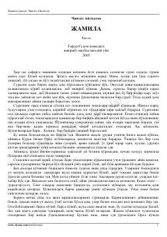

JIkkinchi jahon urushi davridagi insoniy tuyg'ular va muhabbat haqidagi ta'sirli qissa.
Ikkinchi jahon urushi davrida qishloq hayoti va insoniy munosabatlar tasvirlangan asar. Qissa bosh qahramon Jamila va uning qayin ukasi o'rtasidagi samimiy munosabatlar hamda urushning odamlar taqdiriga ta'siri haqida hikoya qiladi.